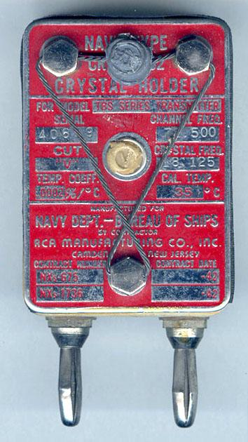
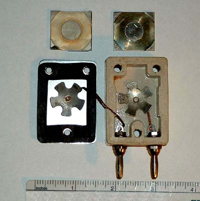
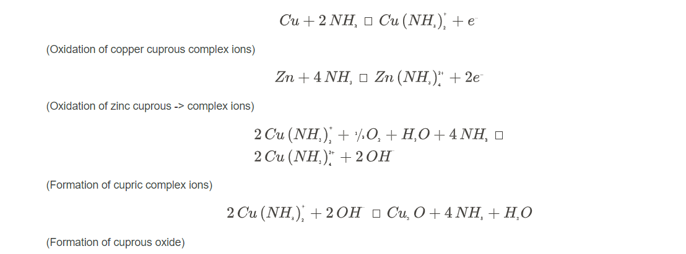
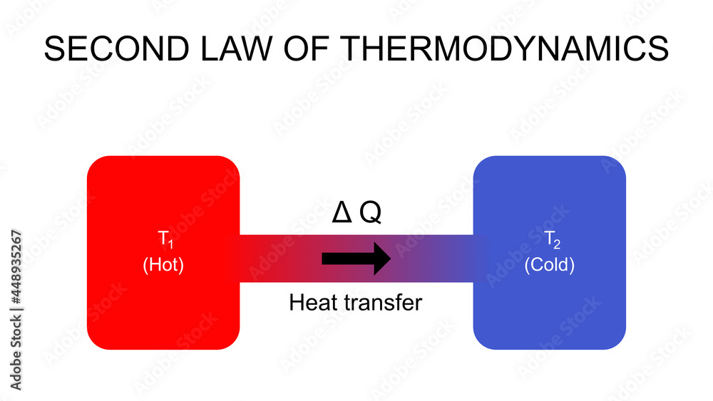
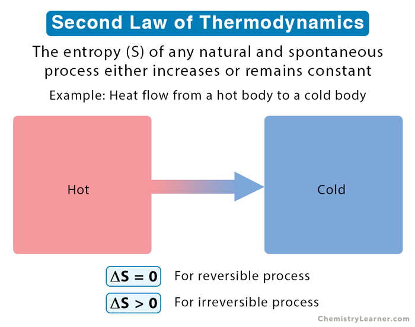
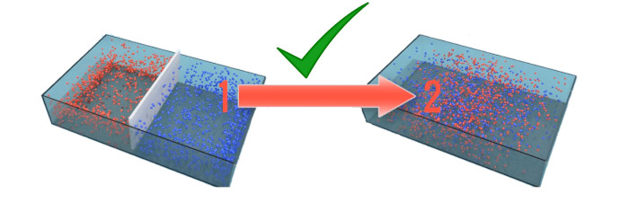
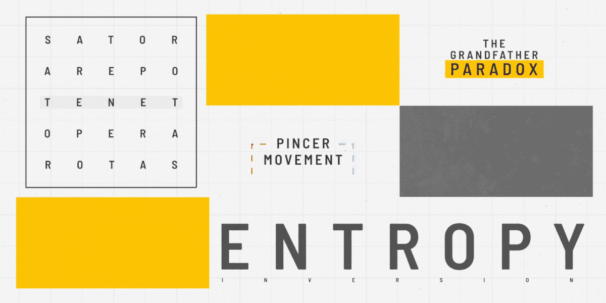
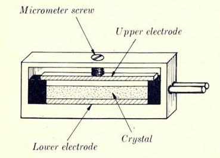

WW2의 수정 이야기 (7) - 통신 두절
게시: 2024-11-07T06:30:37+09:00
<Eaker 장군의 전문> 1943년 하반기에 접어들 무렵엔 이미 상당한 양의 수정 공진기가 제조되어 세계 각지의 물자 집적소는 물론 최전선 부대에게까지 보급되어 있었음. 그런데 어느 순간부터 하나둘씩 수정 공진기를 이용한 무전기가 먹통이 되었다는 장애 보고서가 올라오기 시작. 세상에 인간이 만든 물건 중에 고장 없는 물건이 없는 법이므로 처음에는 대수롭지 않게 생각. 그런 보고서에 대해 관계자들은 대개 '일부 불량품이야 당연히 있는 법이지'라든가 '무식한 병정놈들이 최첨단 무전기를 제대로 쓸 줄 몰라서 발생한 문제' 등으로 치부하며 별 신경을 쓰지 않음.
(왜 먹통이냐고? 니들이 뭔가 잘못 만졌겠지!)
하지만 가면 갈 수록 점점 그런 장애 보고서가 많이 올라옴. 더 이상 무시할 수 없는 수준으로 고장 건수가 늘자 이 문제는 통신사령부 기술 연구소(Signal Corps Engineering Laboratories, (SCEL))에 넘겨져 조사하게 함. 그러나 연구소의 박사님들은 이걸 뭔가 학술적인 측면에서 접근했으므로 조사 속도는 매우 느렸음. 그런 식으로 허송세월 속에 몇 달이 지난 뒤, 영국에서 전문 한 통이 날아옴. 영국에 배치된 미육군 소속 제8공군에서 날아온 것. COMMUNICATIONS EIGHTH AIR FORCE BASED IN BRITAIN BROKEN DOWN LACK OF CRYSTALS FIND CAUSE CURE SAME EAKER 영국에 배치된 제8공군의 통신이 수정 부족으로 마비되었음 원인을 찾고 해결할 것 이커
(여기서 이커란 제8공군 사령관 Ira C. Eaker 장군을 뜻함.) 이런 고위급 인사가 한마디 하자 QCS와 SCEL 등 수정 관련 부서들이 발칵 뒤집혀 바삐 움직임. 즉각 Camp Coles의 통신사령부 실험실에서 가장 많은 고장이 보고된 버마(오늘의 미얀마) 전선에 맞춰 섭씨 37.8도에 습도 100%의 환경을 갖추고 거기서 수정 공진기를 테스트해봄. 그 결과는 경악 그 자체. 모든 수정 공진기가, 단 하나의 예외도 없이, 짧게는 며칠, 길게는 2주일 안에 모조리 고장남. 온갖 전문가들이 투입되어 문제 원인을 찾았는데, 처음에는 손쉽게 해결되는 것 같았음. 수정 공진기에는 페놀 수지(phenolic resin)로 만든 고정대가 쓰였고, 또 접합부에는 황동(brass) 커넥터가 사용되었는데, 고온다습한 환경에서 페놀 수지에서 암모니아가 흘러나온다는 것이 발견되었던 것. 이 암모니아가 황동제 커넥터를 부식시켰는데, 그렇게 약해진 황동제 커넥터가 수정 공진기 특성상 수정이 진동하면서 발생하는 응력(stress)으로 인해 파손되었다는 것이 최소한 일부 장치에서는 확인되었음. 이 문제는 커넥터 재질을 황동 말고 알루미늄이나 스텐레스 스틸 등 암모니아에 저항성이 좋은 금속으로 교체하면서 말끔하게 해결되는 듯 했음.

(해군용 TBS (Talk-Between-Ships) 무전기에 들어간 수정 공진기의 겉모습. 저 나사못과 그 나사못 대가리를 봉인한 납땜, 그리고 그 봉인을 더욱 단단히 묶은 와이어 등은 모두 특정 주파수에 맞춰 놓은 수정 공진기의 주파수를 봉인하기 위한 것.)

(수정 공진기의 내부. 상당히 조잡해보임.)

(암모니아에 의한 황동의 부식 과정을 보여주는 화학식. 저는 고등학교 때도 화학이 진짜 싫었습니다.) 그러나 곧 그런 암모니아 부식 문제는 극히 일부의 문제일 뿐, 진짜 문제는 그것이 아니라는 것이 밝혀짐. <수정이 나이를 먹는다고??> 알고보니 수정 공진기의 고장 원인은 커넥터나 고정대 등의 주변 장치가 아니라 수정 자체에 있었음. 바로 crystal aging, 그러니까 수정의 노화 문제였음. 에이징? 수정은 그냥 광물인데 무슨 나이를 먹고 노화가 된다는 말인가? 사실 크리스털 에이징이라는 단어는 정확한 표현은 아니었음. 이 크리스털 에이징의 핵심은 바로 오염 및 응력(stress). 열역학을 공부해보신 분은 다들 이해하시겠지만, 원래 자연계에는 100%라는 것은 없음. 아무리 진공을 만들고 순수한 물질로 정제를 한다고 해도 99.9999999% 일뿐 완벽한 것은 없음. 그리고 그렇게 99.99999999%로 순도가 높은 상태 자체가 안정적인 것이 아님. 언제나 외부에서 오염 물질이 어떻게든 섞여 들어오는 것이 자연계의 법칙. 'Diamonds are forever'라는 007 영화 제목도 있고 또 그걸 드비어스라는 다이아몬드 회사가 광고 문구로 사용하기도 하지만, 순수 탄소로 만들어진 결정체인 다이아몬드는 그 견고함에도 불구하고 실은 불안정한 상태로서, 그냥 냅둬도 조금씩 탄소가 산화되면서 스러져가고 있는 것임. 백만년이 지나야 하는지 천만년이 필요한지는 모르겠으나 결국 다이아몬드는 이산화탄소로 사라지는 것이 순리이자 조물주의 의지.
순금은 영원할까? 영원함. 그러나 99.99999999% 순수한 순금 상태는 영원하지 않음. 겉으로 볼 때 견고해 보이지만 내버려두면 산소든 탄소든 먼지나 석영 알갱이이든 온갖 외부 오염 물질이 결국 섞여들게 되고, 굳이 녹여서 용융 상태가 되지 않더라도 백만년 천만년이 지나면 조금씩 외부 오염 물질이 내부로 침투하여 이동하게 됨.

(열역학 제2의 법칙은 쉬운 말로 '열은 높은 곳에서 낮은 곳으로 흐른다'는 것.)

(열역학 제2의 법칙을 조금 어려운 말로 하면 '자연계의 전체의 엔트로피는 절대 감소하지 않는다'는 것.)

(엔트로피를 좀 더 쉽게 풀어서 설명하면 '자연계는 그냥 내버려두면 점점 무질서한 방향으로 변화한다'라는 것. 여러분들 방을 누군가 힘들여 치우지 않으면 며칠 안에 쓰레기장이 되는 것이 바로 직접적인 예.)

(엔트로피의 개념은 놀란 감독의 영화 Tenet을 보고 공부합시다) 마찬가지로 석영 결정인 수정은 안정적인 광물이지만 조금씩 외부 물질에 의해 오염되고, 또 조금씩 자체 질량을 외부 환경에 빼앗겨 부피가 줄어듬. 백만년 천만년도 아니고 불과 며칠 몇 주만에 수정이 오염된다고 하면 이상하게 생각될 수 있지만, 가장 쉽게 생각하면 습기가 침투하는 것이 대표적인 오염임. 그래서 특히 고온다습한 환경에서 수정 공진기를 이용한 무전기가 자주 고장났던 것. 이런 오염과 질량 변화는 특정 주파수를 내도록 딱 맞는 두께로 연마된 수정 박판의 진동 특성에 변화를 주게 되고, 결국 그 원하는 주파수를 내지 못하게 됨.

(수정 공진기의 기본 구조. 저렇게 나사못으로 딱 맞는 위치로 전극판을 조여놓아야 원하는 주파수를 얻을 수 있었음. 그런데 수정 박판 자체의 두께가 변한다면? 대략 난감임.)
또한 수정 공진기 본질상 수정 박판은 엄청난 횟수로 작게나마 늘었다 줄었다를 반복하는데, 그런 형상 변화는 결국 수정 박판과 그 주변의 고정판이나 전기 커넥터 등에 응력(stress)을 쌓게 되고, 결국 기계적인 느슨함 등을 일으켜 역시 원하는 주파수를 내지 못하게 되었던 것. 이렇게 문제의 원인을 밝힌 것까지는 좋았는데... 문제는 그 해결. 이미 수백만개의 수정 박판이 생산 완료되어 일부는 무전기 등의 부품으로 이미 조립까지 완료되었고 일부는 물자 집적소에 쌓여 있었음. 이제 와서 수정 공진기는 없던 것으로 치고 그냥 코일 감아서 만든 RLC 회로로 바꿔야 하나??? 그러나 죽으라는 법은 없는 법. (다음 주에 계속)